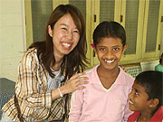
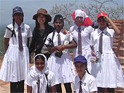
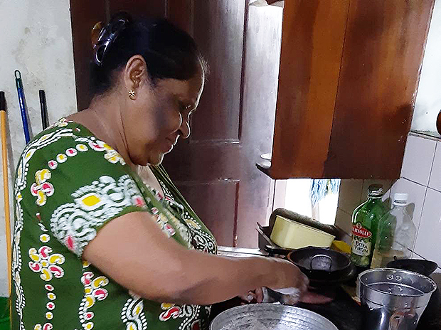
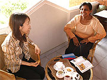
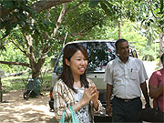
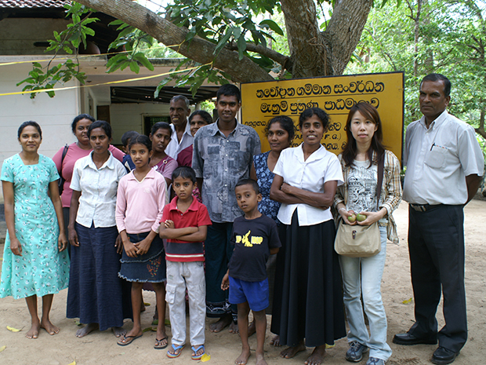
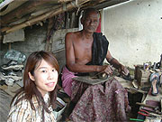
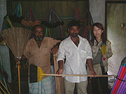

 低開発村の子供たちと。 |
 世界遺産で出会った女子高生と。 |
「今回の旅では、アジアの国で一般の方々と触れ合いを持ちたかったのですが、英語が苦手なため一人では限界があり、ホームステイしながら英語レッスンできるのは理想的でした。
また、今回参加できませんでしたが、実費だけで参加できるボランティアプログラムが豊富にあるのも、意欲を感じ信頼できると感じました。
現地では、マーネルさんに日々の生活や観光の計画まで、私のわがままに臨機応変に対応して頂き、何不自由なく過ごすことができました。
 健康的なスパイシーカレー作り♪ |
ホームステイでは、ご家族の方が常に私の健康状態を気にしてくださり、一日何種類ものカレーを食べ、日本よりも健康に過ごせました。 また、スリランカならではの食材、薬など、買い物をしながら紹介してくれました。 |
スリランカでは、人との距離が近い気がします。
初対面や年齢が離れていると、日本では遠慮するところがありますが、スリランカでは人もナチュラルで、人見知りな私も驚くほど自然にいられました。
そして、細やかな気遣いは日本人に似ていると思います。
レッスンは 私のスピードに合わせてもらえ、レッスン以外にもご家族の方とたくさん英語でお話でき、短期間でしたが確実にリスニング力がつきました。 宿題も無理のないよう考慮して頂き、空いた時間に英語の児童書などを貸してもらえました。 |
 ステイ先のテラスで英語レッスン♪ |
会話は、お互いの国のことから個人的なことまで楽しく発展しました。心に残っているのは、スリランカの人は精神の強さを重視していることです。
外国の方とこれ程長時間話し合う機会はなかなか得られないと思います。
個人的な理解を通して学ぶことができるのも、このプログラムならではだと思います。
低開発村視察では、ＴＦＧスタッフの方々と、職業訓練校の卒業生の家を何軒か訪問しました。
訓練を受けた後に事業を苦労して起こし、村の人々をも豊かにするため奮闘する姿に、意欲とアイデアさえあれば変わることができるのだなと勇気付けられました。
 低開発村でアーユーボワン！ |
 村の方々と記念写真☆ |
また、このような活動を始め、労を惜しまず生き生きと指導しておられるTFGの皆さんに、大変感銘を受けました。
ゾウに一人乗りしちゃった♪ |
旅行前はスリランカのことをほとんど知らなかったのですが、たくさんの観光地があります。 無理を言って、一日でサファリや世界遺産に行かせてもらいました。 |
野生の象は迫力がありましたが時々人を襲うこともあるそうで、生き物を大切にする反面の苦労があるとは意外でした。 普通の観光旅行では得られないような出会い、経験を通して、予想以上にスリランカの現状や人々の考え方を知る事が出来ました。 |
野生のゾウの群れは驚きの迫力！ |


何より、善意に生き、人のために喜んで行動する、本当に素晴らしい方々と出会えたことが貴重な財産です。
世界には色々な生き方がある、素敵な人がたくさんいるんだと、目の覚める思いでした。
日本での限られた生活では決してできない出会いの機会を与えてくださった逢坂さんに、とても感謝しています。」
 靴職人のおじさん。 |
 日用雑貨店にて。 |